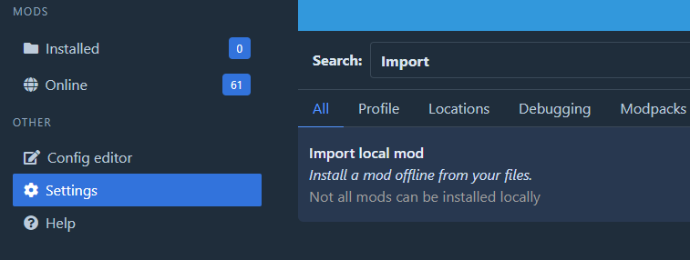

Mods found outside r2modman need to be installed a certain way, which depends on their mod format.
Supported Formats
If you happen to obtain a mod from somewhere other than Thunderstore, it may be in a format that can be imported directly into r2modman:
- r2modman packages
- Deli mods
If it is one of the above formats, install it via the Import Local Mod button within the Settings menu:

Files imported by r2modman are placed into a folder within BepInEx/plugins/ and may use other BepInEx folders as
needed, such as Sideloader mods.
Warning
Mods must be formatted a certain way for r2modman to understand them. If a mod is not in a supported format, it cannot be imported directly.
Unsupported Mods
If a mod is not in a supported format, additional work is required.
An unsupported mod may be manually installed or packaged. Manual installation is quicker,
but packaging allows r2modman to manage it.